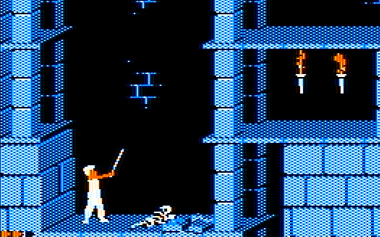
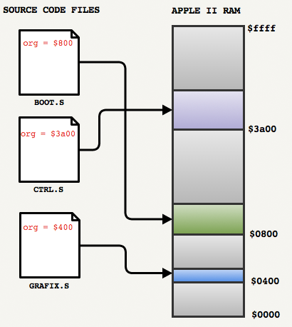
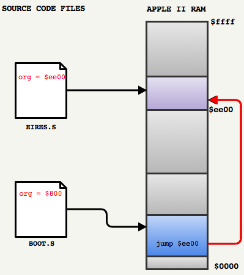
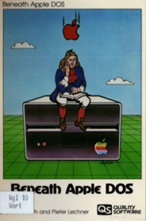

Prince Of Persia Code Review: Part 1 (Introduction)

On Apr 17, 2012 Jordan Mechner released the source code of Prince of Persia.
Even though it is the Apple II version written in 6502 assembly language, it was a pleasant experience to dive in the code of that mythical game: As usual there were many fascinating sofware wizardries to discover.
The Apple II apparent poor environment for game programming was actually ground to unmatched innovation and creativity : From self-modifying code, in-house bootloader, clever floppy disc
format to skewing lookup tables: Prince Of Persia features engineering treasures in every modules.
Reading the source allowed me not only to learn about the game development process of the 80s but it also renewed my appreciation for things that we take for granted today.
As usual I took numerous notes that I have cleaned up on this page. I hope it will inspire others to read more source code and become better engineers.
Acknowledgment : I would like to thank Miles.J from 6502.org and Roland Gustafsson (author of RWTS18) for patiently sharing their knowledge with me.
Part I : Introduction
Part II : Bootloader
Part III : Code explained
EDIT June 17th, 2013 : Jordan Mechner commented on this article (#32).
EDIT June 17th, 2013 : Andreas Varga (whom reverse engineer POP before the source code release) also commentd (#41) !
Where to start ?
The source code is available in a GitHub repository and can be downloaded with one command:
git clone git://github.com/jmechner/Prince-of-Persia-Apple-II.git
The interesting part is in /Prince-of-Persia-Apple-II/01 POP Source/Source/ which contains the game engine made of numerous .S files.
That is the first thing that programmers back then did not have: High level languages with high quality compilers. To achieve high performances developers had to work down to the metal using 6502 assembly. This is what those .S files are.

According to Jordan Mechner's book: Making of Prince of Persia, POP used Merlin assembler.
One of the good feature of Merlin is the ORG directive which allows to hint the assembler where the instructions will be loaded in RAM: In POP, there is a ORG directive at the top of every files.
Trivia : ORG directives were really just hints. There was no operating system and no linker/loader on Apple II: The developer had to "somehow" manage to transfer the instructions from floppy disc
to the intended location.
The second important thing to understand to get POP big picture is how modules communicate together. Since there were no inter-file linker back then (and no final executable, only fragments) modules have to communicate by jumping into the void...where other modules are supposed to be.

As an example we can see in the bootloader
BOOT.S at line 138:
jmp $ee00
Which is a bit mysterious.
In order to follow the instruction stream we need to find out what is at $ee00. With a little grep command we can see org = $ee00 in HIRES.S and carry on.
Because there were no linkers, developers of the 80s had to know the memory layout of their engine and understand their RAM budget. It is a practice that is quite uncommon today since a lot of professionals rely on garbage collectors or use auto-resizing vectors.
6502 Assembly
That is it for the big picture and how to navigate sub-systems. Now to understand the content of each module, you must know a bit about the CPU. Luckily, the 6502 is a simple 8-bit processor with a 16-bit address bus. It features only three registers able to address 64K of RAM (bank switching extended that to 128K), no floating-point capabilities and no segmentation for a total of only 56 instructions.
- Grey: 64KB of RAM, including 256 bytes reserved for the stack.
- Blue: 3 registers X,A,Y (8bits).
- Green: One 16 bits Program Counter.
- Red: One 8 bits Stack Pointer.
- Yello: A few STATUS flags.
Two great books that are unfortunately out of print today : Apple II Reference Manual and Inside the Apple IIe.
Starting point
There were no IDEs in the 80s and there are no C source files with a main method today so we cannot really tell where the program starts. In order to know where to read first we have to know how the Apple II booted:
- Read the first byte X of sector 0 on track 0 from the floppy disk.
- Load X sector(s) from track 0 to RAM at address
$800. - Start executing code at
$800.
In order to find the starting point we can look what module was hinted to run at $800 by searching for ORG directive:
fabiensanglard$ find . -name "*.S" -exec grep -H "org = \$800" {} \;
./01 POP Source/Source/BOOT.S:org = $800
./02 POP Disk Routines/CP.525/POPBOOT0.S:org = $800
./03 Disk Protection/POPBOOT0.S:org = $800
./04 Support/MakeDisk/DRAZ/DRAZ.S:org = $800
./04 Support/MakeDisk/S/BOOT.S:org = $800
So the starting point is in BOOT.S: a file that we will see it later contains POP bootloader.
Recommend readings
Jordan Mechner published his journals (available as a book or a pdf). It is a very accurate description of what game developers have to go through during the development of a game: Doubt, pressure, despair hope and excitement to name only a few feelings.
For the more technically inclined, check out the developer notes that was intended to Atari/Amniga/PC developers (those ports did not go very well but I won't spoil the "Making Of" journal).


A few videos from the legendary rotoscoping process and featuring "Tina LaDeau" (the Princess) that is mentioned in Jordan's diary ;) !
Note : Jordan Mechner did an AMA on Reddit in January 2013, you can find it here.